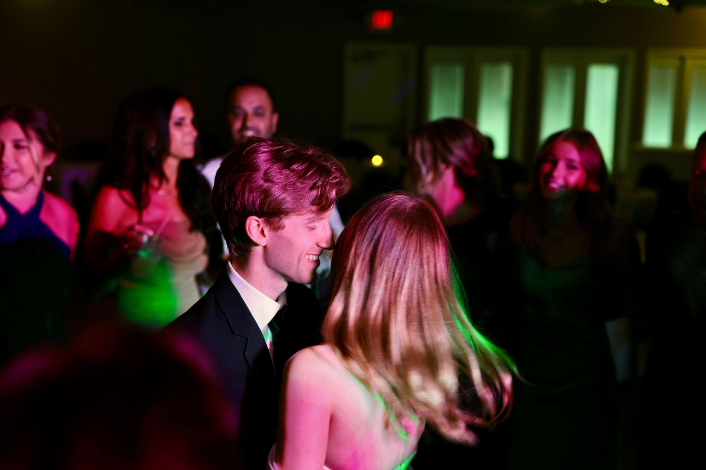
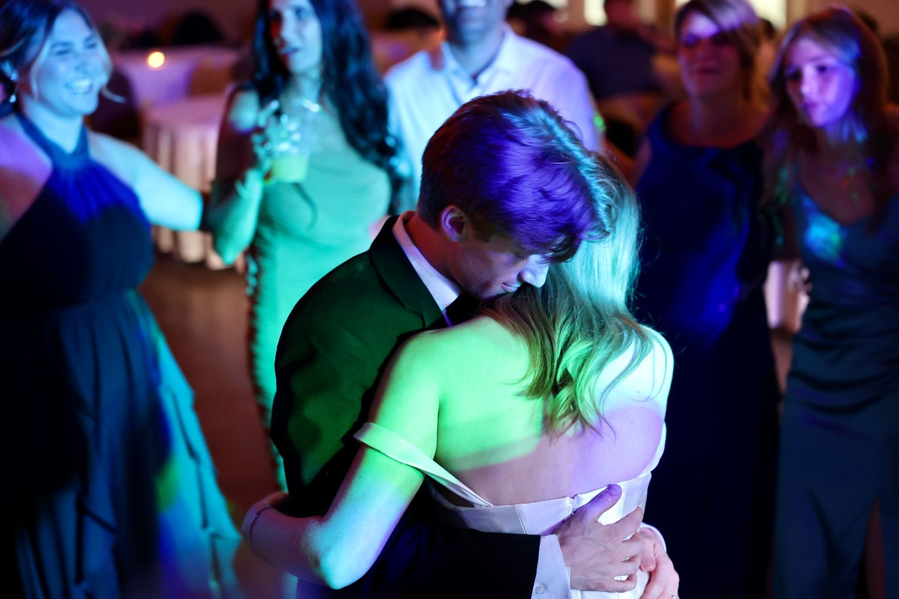
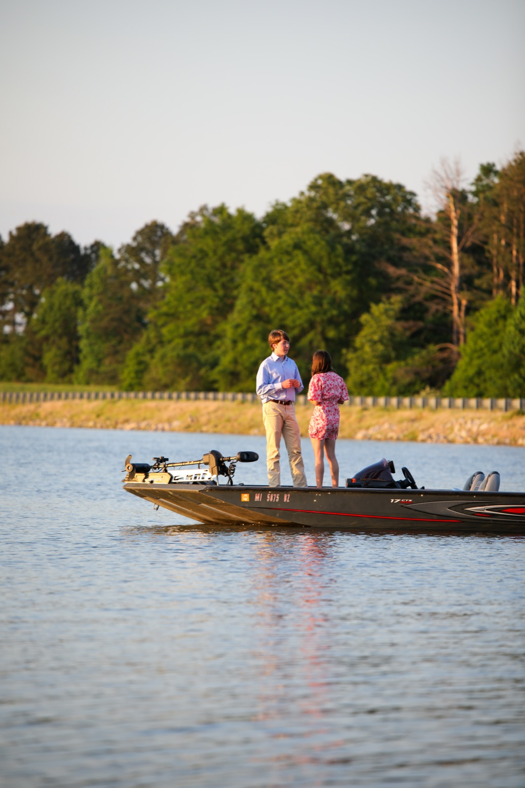
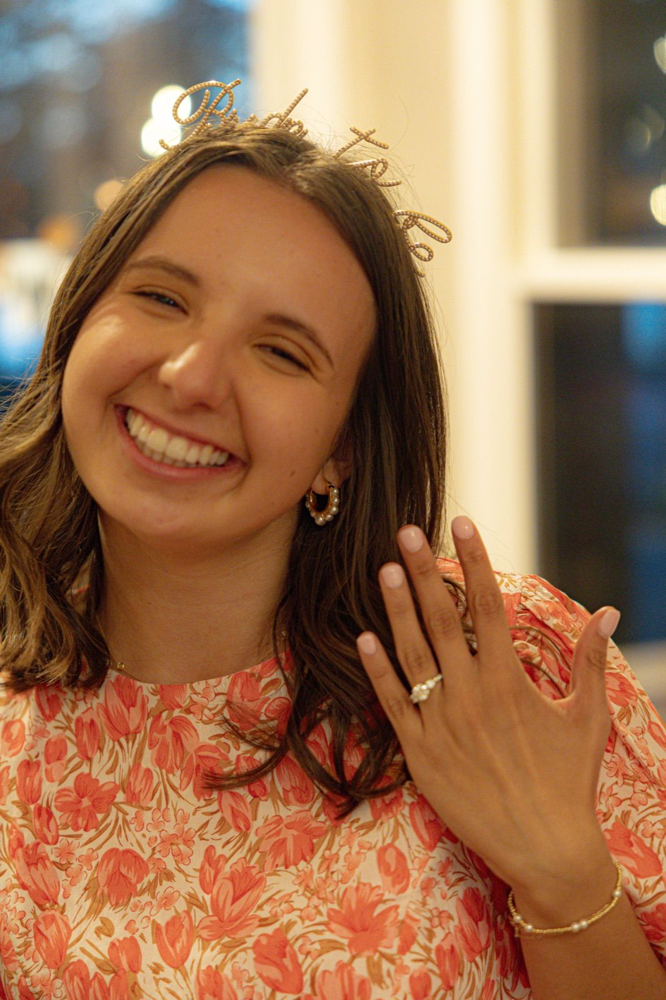
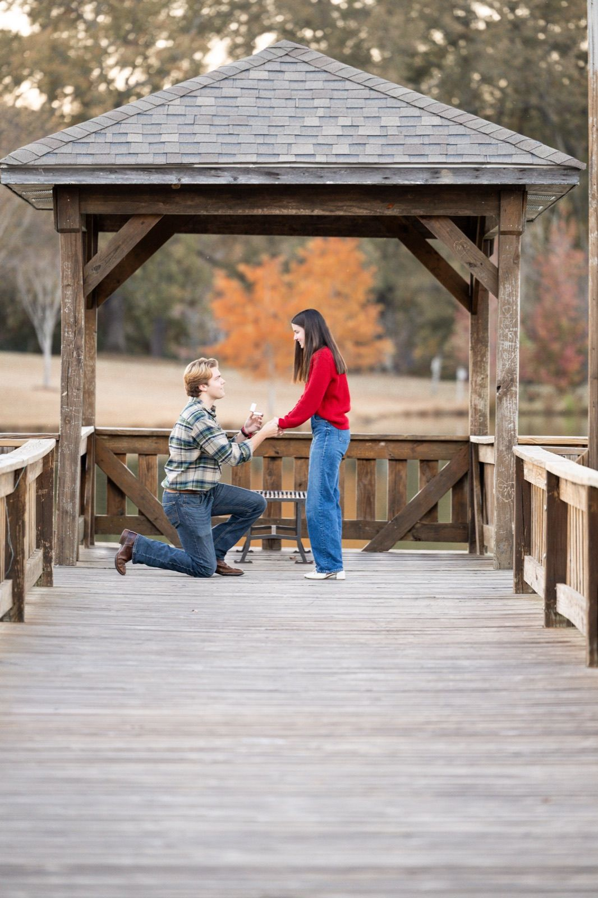
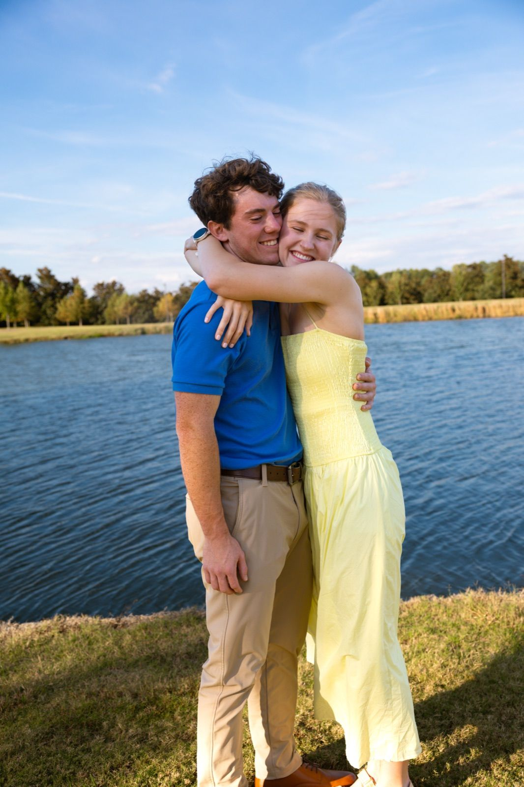
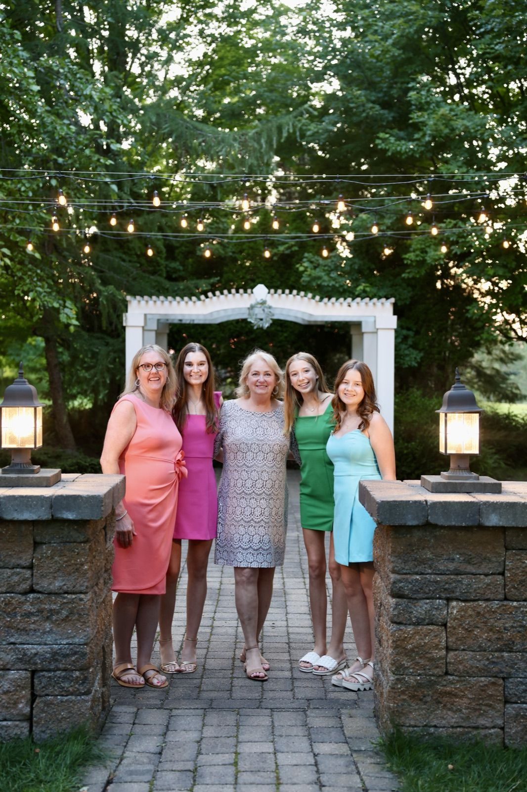

Ceremony
Two hours, just the ceremony. I film it from two angles with professional audio on your vows and readings, then edit it into a 4K film. What a ceremony film includes.

I'm Samuel Long, and I film weddings in Oxford, at Ole Miss, across the Jackson metro and around Mississippi. You can watch two highlight films and a ceremony clip on this page.
Start here. This is their highlight film, about four minutes: getting ready, the ceremony and vows, and the reception.
When I'm not filming weddings, I work in live broadcasting for the SEC Network as a technical director and replay operator. In live TV, one missed detail can cost you the moment. A wedding works the same way, so I plan the day around the moments that only happen once.
My Ceremony film uses two camera angles and professional audio on your vows and readings.
I'm an FAA Part 107 certified drone pilot, so Story and Legacy include aerial footage wherever flying is permitted. I've been making films and photos since 2019, and there's more about me and my background on my about page.

Julie & Brent's highlight film runs about four and a half minutes. Clayton & Isabelle's is one minute from their ceremony film: the bride's entrance. More of my work is in my wedding film portfolio.
Julie & Brent
Clayton & Isabelle, ceremony film
Four ways to film your day, from just the ceremony to my fullest coverage with a second videographer and drone. Here's how those hours lay out on the day.
Two hours, just the ceremony. I film it from two angles with professional audio on your vows and readings, then edit it into a 4K film. What a ceremony film includes.
Six hours of coverage. A 3 to 5 minute highlight film set to licensed music, following the day from before the ceremony through the reception. Color graded, 4K, with one revision included.
Eight hours of coverage. A 4 to 6 minute film built on your own words: vows, speeches and voiceovers, with professional audio on the ceremony and toasts. Adds a second videographer and drone where permitted. 4K, one revision.
Ten hours, the fullest coverage I offer. A 4 to 6 minute highlight plus the full multi-camera ceremony film, professional audio, a second videographer, drone, rehearsal dinner toasts, and a 30 to 60 second reel for social. 4K, two revisions.
I photograph engagement sessions and surprise proposals too, around Oxford and Ole Miss and across the Jackson metro. The first two photos, on the boat and with the new ring, are from Clayton & Isabelle's proposal day.




Thirty minutes at one spot, with up to 15 edited, high resolution images in a private online gallery.
An hour at up to two spots, up to 30 edited images, a gallery ready for social, and personal printing rights.
Two hours across multiple spots with two outfit changes, 50+ edited images, and a 1 to 2 minute story video from the session.
I'm based in Oxford and Madison, so weddings at Ole Miss and across the Jackson metro (Madison, Ridgeland, Flowood and Brandon) are close to home.
I film across the rest of Mississippi too. If you're getting married somewhere else in the state, send me the details.

Story and Legacy. Both add a second videographer and drone coverage, flown where it's permitted.
Two hours of coverage for the ceremony itself, filmed from two camera angles with mics on the groom and the officiant. You get the full ceremony plus a cut-down edit in your video book. More on the ceremony film page.
Yes. Engagement sessions run from 30 minutes at one spot up to two hours across several, and the Premium session adds a 1 to 2 minute story video.
Yes. I'm happy to build coverage around your day. Send me your date and what you have in mind, and I'll put together a quote.
More answers, from delivery to deposits: questions to ask a wedding videographer.
Tell me your date and where you're getting married. I read every message myself and usually reply within a day. You can also email samuel@samuellongproductions.com or find me on Instagram.
Check your date